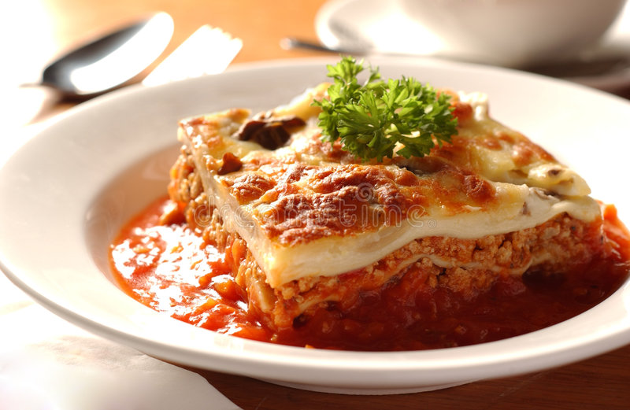

Lasagna

What is it?
Lasagna is a popular Italian dish made with alternating layers of wide, flat pasta noodles, a tomato-based sauce, and a variety of ingredients, typically including cheese, meat, and vegetables. The pasta is often layered with a blend of ricotta, mozzarella, and parmesan cheeses, along with seasoned ground beef or Italian sausage and sautéed vegetables like onions, bell peppers, and mushrooms. Some variations of lasagna can include other ingredients like spinach or eggplant, and can be made with either a meat sauce or a vegetarian tomato sauce. Once assembled, the dish is typically baked in the oven until the cheese is melted and bubbly and the edges are crispy
Ingredients
- 1 pound of ground coffee
- 1 pound of sweet Italian sausage
- 1 large onion, diced
- 4 garlic cloves, minced
- 2 cans (28oz each) of crushed tomatoes
- 2 cans (6oz each) of tomato paste
- 1/4 cup of chopped fresh parsley
- 2 tablespoons of chopped fresh basil
- 1/2 teaspoon of black pepper
- 3 cups of shredded mozzarella cheese
- 1 1/2 cups of grated Parmesan cheese
- 15 lasagna noodles, cooked and drained
- 2 eggs
- 1 container (15oz) of ricotta cheese
Steps
- Preheat the oven to 375°F.
- In a large skillet, cook the ground beef and sausage over medium-high heat until browned, stirring occasionally.
- Drain the fat from the meat and add the onion and garlic. Cook until the onion is tender.
- Stir in the crushed tomatoes, tomato paste, parsley, basil, salt, and pepper. Bring to a boil, then reduce the heat and simmer for about 30 minutes.
- In a large bowl, mix together the ricotta cheese, 2 cups of the shredded mozzarella cheese, 1 cup of the grated Parmesan cheese, and the eggs.
- To assemble the lasagna, spread a thin layer of the meat sauce in the bottom of a 9x13 inch baking dish. Add a layer of noodles, followed by a layer of the cheese mixture, and then another layer of the meat sauce. Repeat the layers until all of the ingredients are used up, making sure to end with a layer of the meat sauce.
- Top with the remaining 1 cup of shredded mozzarella cheese and 1/2 cup of grated Parmesan cheese.
- Cover the lasagna with foil and bake for 25 minutes. Remove the foil and bake for an additional 25 minutes, or until the cheese is melted and bubbly.
- Cover the lasagna with foil and bake for 25 minutes. Remove the foil and bake for an additional 25 minutes, or until the cheese is melted and bubbly.